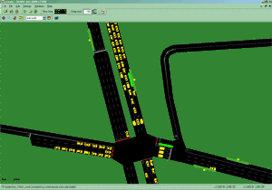
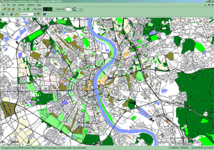
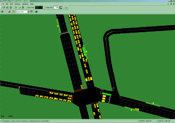
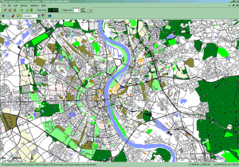

SUMO
Simulation of Urban MObility
SUMO is a highly portable, microscopic road traffic simulation package designed to handle large road networks. It is mainly developed by employees of the Institute of Transportation Systems at the German Aerospace Center. SUMO is open source, licensed under the GPL.
Please cite SUMO in your publications as following: Michael Behrisch, Laura Bieker, Jakob Erdmann and Daniel Krajzewicz. SUMO - Simulation of Urban MObility: An Overview In: SIMUL 2011, The Third International Conference on Advances in System Simulation, 2011.
[bibtex] [pdf]
And: please don't forget to inform us about your results!
Get Started
- About
- Download (for Windows)
- Documentation
- Traffic Light Game / Ampelspiel
Das Spiel aus der Langen Nacht der Wissenschaften für daheim.
News


 





|
|